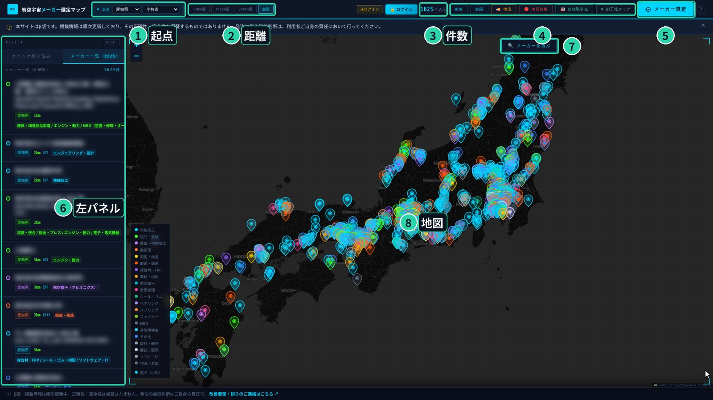

メーカーマップは、国内の航空宇宙サプライヤ1,625社（うち JIS Q 9100 取得 1,071社）を地図の上で探せる無料ツールです。
「この加工、どこに頼めるだろう？」を、地域・業種・認証・寸法からしぼり込んで見つけられます。このページでは、はじめて使う方向けに、操作の動画をまじえて順番に説明します。
最終更新：2026年10月 ／ 掲載社数は2026年10月時点の公開データです。
メールアドレスで無料登録すると、設備や対応寸法などの詳しい情報も見られるようになります（違いはこちら）。
マップを開くと、次のような画面になります。番号の場所を覚えておくと、あとの説明がわかりやすくなります。

知っている会社を確認したいときや、「この県にどんな会社があるか」を見たいときの使い方です。
「社名・住所 検索」の下にある「設備名称 検索」では、マシニングセンタ、旋盤、型番、設備メーカー名などで探せます。設備データは登録された方に公開しているため、お試しの状態では結果が0件になります。
↑ 目次へ戻る外注先は「近いこと」も大事です。起点を決めておくと、距離でしぼり込んだり、近い順に並べたりできます。
クイック絞り込み タブでは、いくつかの条件を組み合わせて表示する会社をしぼれます。
| 項目 | できること |
|---|---|
| 業種（登録の主分類） | 機械加工、表面処理、熱処理、鍛造・鋳造などのチップを押してON/OFFします。全ON 全OFF で一括切り替え。各チップの数字は該当社数です。 |
| 対応工程でしぼる（暫定） | 業種とは別に、各社が対応している工程でしぼります。 |
| 地域（都道府県） | 都道府県を1つ選んで表示します。 |
| 起点からの距離 | スライダーで、起点からの距離の上限を細かく決められます。 |
| ワーク寸法でしぼる | X・Y・Z（mm）を入れて、そのワークが収まる設備を持つ会社だけにします。無料登録で利用可 |
地図の上にある 🔍 メーカーを選ぶ を押すと、画面下に案内つきの検索が開きます。質問に答えていくだけで、条件に合う会社がしぼり込まれます。
画面右上の メーカー選定 を押すと、右側に選定パネルが開きます。作りたい品物の条件から、発注先の候補を比べられます。4つのタブがあります。
ワークの形（角物か丸物）を選び、寸法を入れます。角物は X・Y・Z、丸物は 径φ と 長さL（mm）です。各社の実際の設備サイズと照らし合わせて、次の記号で判定します。
| 記号 | 意味 |
|---|---|
| ○ 対応可 | すべての軸に10%以上の余裕をもって収まる設備がある |
| △ 要確認 | 収まるがギリギリ、または一部の寸法が未確認 |
| ✕ 非対応 | 収まる設備が見つからない |
材料（アルミ、ステンレス、チタン、耐熱合金など）や精度の目安を選ぶと、注記がつきます。お試しの状態では近い5社まで表示され、全社の判定は無料登録で見られます。
材料と形状（円筒・角・複雑・板）を選ぶと、その品物の標準的な工程の流れ（荒加工→熱処理→仕上げ→検査→表面処理など）と、工程ごとの対応社数が出ます。工程名を押すと、その工程に対応する会社が地図上で強調されます。対応社数が少ない工程（目安20社未満）は、ボトルネックとして注意表示が出ます。
標準の流れにとらわれず、必要な工程を自由に選んで組み合わせます。工程は自動で順番に並び、それぞれの対応会社が表示されます。複数の工程をまとめて頼める会社を探したいときに便利です。
表面処理・特殊工程の専用タブです。くわしくは次の章をご覧ください。
めっき、陽極酸化、化成処理、不動態化、塗装、溶射、熱処理、ショットピーニングといった表面処理・特殊工程について、ワークと納め先に合う会社を判定します。メーカー選定 の 表面処理でしぼる タブから使います。
| 条件 | 判定 |
|---|---|
| 国内一般向け | Nadcapは不要。処理と対応材料が合えば○ |
| 海外OEM向け | 該当工程のNadcap（めっき・陽極・化成・不動態＝CP、塗装・溶射＝Coatings、熱処理＝HT、ショットピーニング＝SE）が必要。なければ✕ |
| Boeing／Airbus指定 | 該当OEMの承認が必要 |
| 高張力鋼・チタン×めっき | 水素脆性除去のベーキングが必要。対応が未確認なら△ |
処理槽・炉のサイズは、公開している会社のみ表示します。この判定も一次スクリーニング用です。
↑ 目次へ戻る画面上部の ⚙ 加工域マップ を押すと、いま表示している会社が持つ設備の加工範囲を、グラフに点で並べて見られます。「φ200以上の旋盤を持つ会社はどのくらいあるか」といった全体の分布をつかむのに便利です。
| 系統 | グラフの軸 | 対象の設備 |
|---|---|---|
| 加工域 X×Y | X（mm）× Y（mm） | マシニング、5軸マシニング、フライス、平面研削 |
| 径φ × 長さL | 径φ（mm）× 長さL（mm） | NC旋盤、複合旋盤、円筒研削 |
| 成形能力 t | 能力（t）× 長さL（mm） | プレス、曲げ、鍛造 |
| ボタン | できること |
|---|---|
| 東海 全国 | 地図の表示範囲を、東海地方または全国にすばやく切り替えます。 |
| 🚚 物流 | 物流分析モード。高速道路のIC、新幹線の駅、空港を地図に表示し、運びやすさの見当をつけられます。 |
| 🔴 地震情報 | 最新の地震情報を地図に表示します（60秒ごとに更新）。取引先の地域で地震があったときの影響確認に使えます。 |
| 🏭 自社取引先 | 自社の取引先リスト（CSV）を読み込み、地図を取引先だけにしぼります。ひな形CSVもダウンロードできます。読み込んだデータはお使いの端末の中だけで処理され、外部には送信されません。 |
| 改善要望・誤りのご連絡 | 画面下のリンクから、掲載内容の誤りや機能の要望をお知らせいただけます。 |
登録しなくても基本の機能は使えます。メールアドレスで無料登録すると、設備や寸法などの詳しいデータが見られるようになります。料金はかかりません。
条件が重なりすぎている可能性があります。左パネル右上の「RESET」で条件を戻してから、1つずつ試してください。お試しの状態では、設備名称の検索や設備条件は0件になります（無料登録で使えます）。
はい、同じ機能をスマートフォンのブラウザでもお使いいただけます。比較や表の確認は、画面の広いパソコンのほうが見やすいです。
各社の公式サイトなど、公開されている情報をもとにしています。β版のため順次更新しており、正確さ・完全さを保証するものではありません。発注の最終判断は、各社への確認のうえで行ってください。
画面下の「改善要望・誤りのご連絡はこちら」からお知らせください。確認のうえ反映します。
メーカーマップ（以下「本サービス」）は、ご登録いただいたメールアドレスを次の目的にのみ使用します。
収集する情報はメールアドレスのみです。取得した情報を第三者に販売・提供することはありません。認証基盤には Supabase（Supabase, Inc.）を使用しています。情報の開示・削除をご希望の場合は、本サービスのお問い合わせ先までご連絡ください。
「自社取引先」機能で読み込んだCSVは、お使いの端末内でのみ処理され、本サービスに送信・保存されることはありません。
マップを開く →